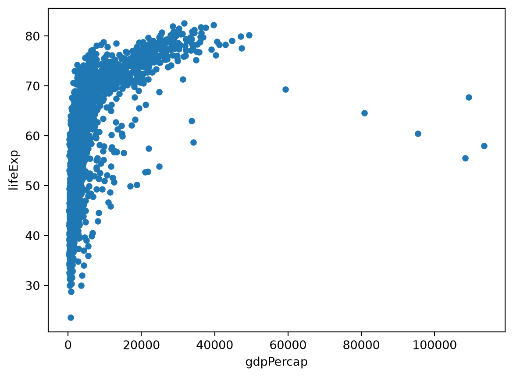
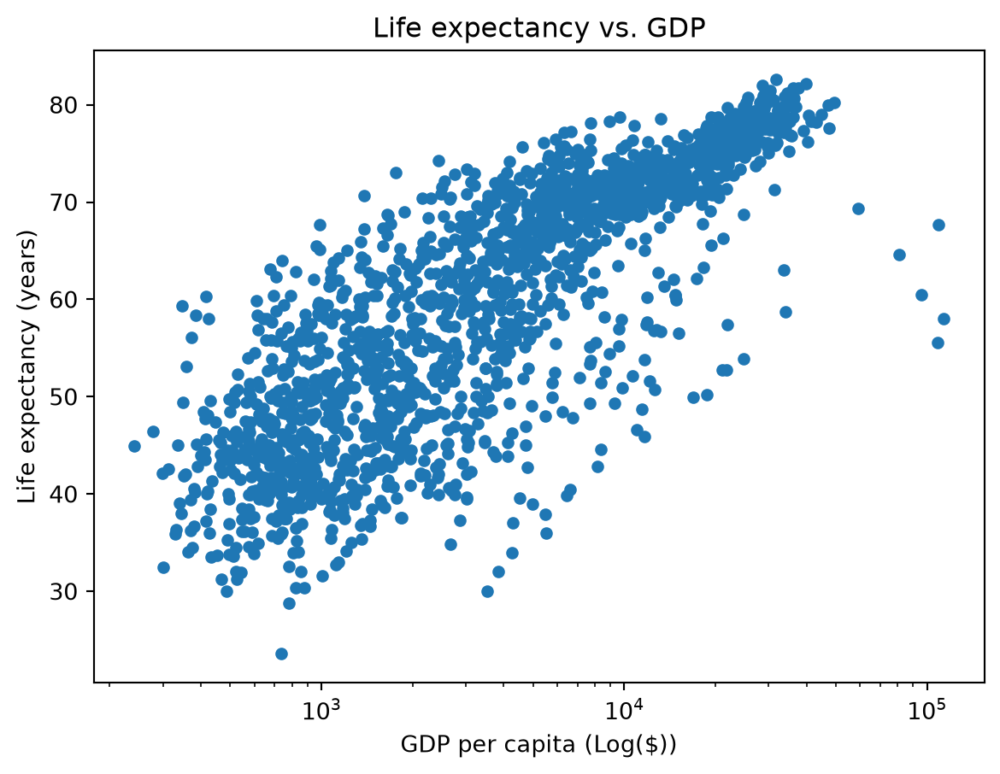
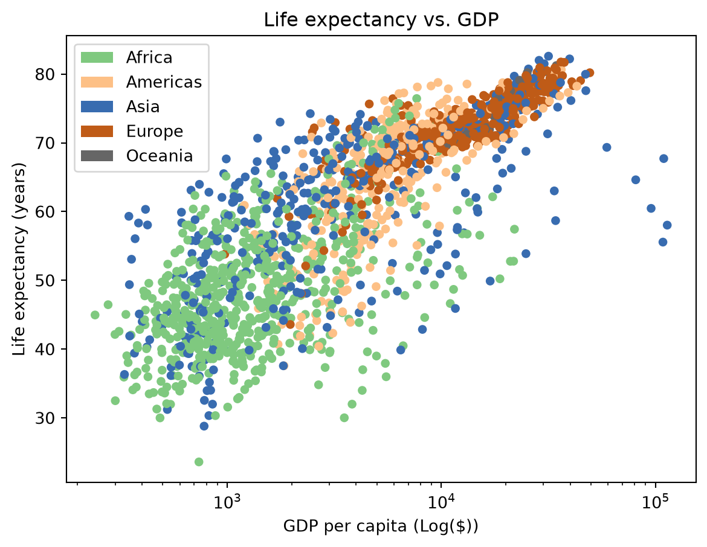
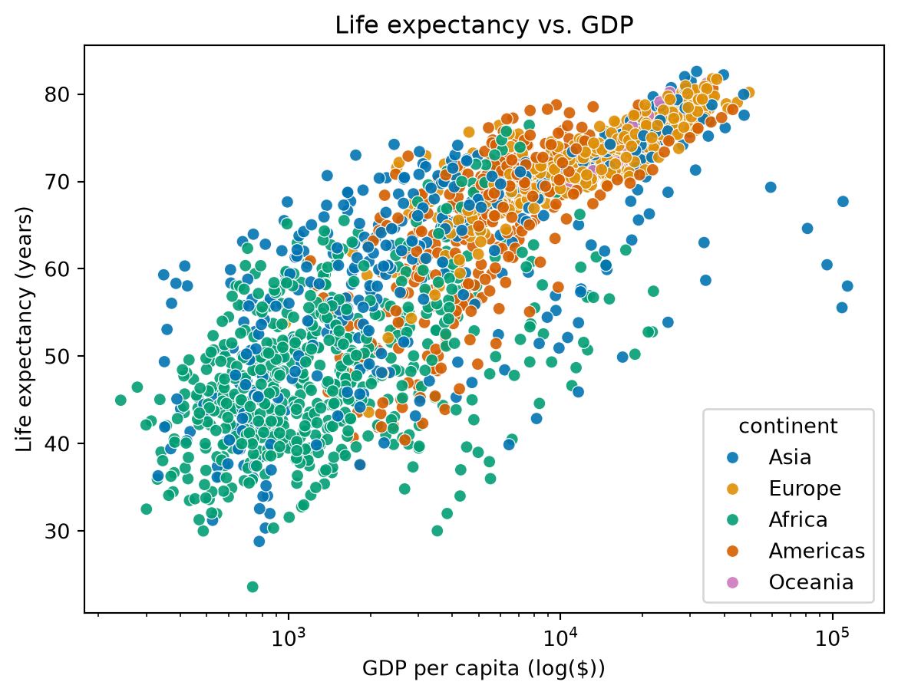
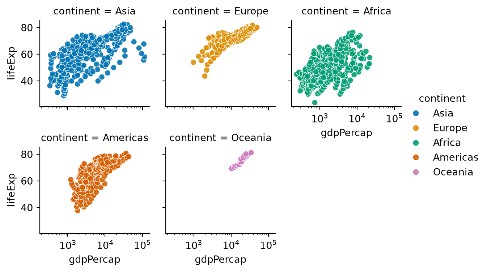

import os # os for "operating system"
# "mkdir" stands for "make directory" (a "directory" is just a folder!)
os.mkdir('data')
os.mkdir('output')Intro to Data Visualization in Python
This tutorial will demonstrate how to read in data from a file in Python and create a basic plot using three different tools: matplotlib, seaborn, and plotnine.
Learning Objectives
- Gain familiarity with Python
- Read in data from a file using Pandas
- Visualize data in a graph (scatterplot)
For this tutorial, we’ll be using data from gapminder. gapminder promotes sustainable development goals by increasing use of statistics about social, economic, and environmental development. This dataset is at the national level and includes GDP per capita, life expectancy, and population statistics.
Use this link to download the dataset (right-click on the link and select Save As...). Make sure to save it somewhere you’ll remember, like your Desktop or Downloads. We’ll be moving it somewhere else later.
Setup
Before we get into the nitty-gritty of this tutorial, first we need to set up our development environment.
We will first create two folders, one called data and one called output, inside the project folder we just created. To do this using Python, we can run the following code:
ImportantPackage installation for Using Google Colab
If you’re using Google Colab, run the below code to make sure these packages are installed. Otherwise, skip this!
Code
!pip3 install pandas matplotlib seaborn plotnineImport packages
Importing packages in Python is like opening an application on your phone or your computer. When you want to write a paper or something similar, you might open Microsoft Word or Google Docs and then create your document. We open the application so we can use it, and importing is the same idea!
import pandas as pd # pd is an "alias" for pandas, basically shorthand!
import matplotlib.pyplot as plt
import seaborn as sns
# Below is a different type of import, we're importing "all" (aka *) the contents of plotnine,
# so we won't have to refer to "plotnine" the whole time.
from plotnine import * Reading in our data
gap_5_yr = pd.read_csv('../data/gapminder-FiveYearData.csv')
gap_5_yr.head()| country | year | pop | continent | lifeExp | gdpPercap | |
|---|---|---|---|---|---|---|
| 0 | Afghanistan | 1952 | 8425333.0 | Asia | 28.801 | 779.445314 |
| 1 | Afghanistan | 1957 | 9240934.0 | Asia | 30.332 | 820.853030 |
| 2 | Afghanistan | 1962 | 10267083.0 | Asia | 31.997 | 853.100710 |
| 3 | Afghanistan | 1967 | 11537966.0 | Asia | 34.020 | 836.197138 |
| 4 | Afghanistan | 1972 | 13079460.0 | Asia | 36.088 | 739.981106 |
We can learn about the columns in our data using the pd.DataFrame.info() method.
gap_5_yr.info()<class 'pandas.DataFrame'>
RangeIndex: 1704 entries, 0 to 1703
Data columns (total 6 columns):
# Column Non-Null Count Dtype
--- ------ -------------- -----
0 country 1704 non-null str
1 year 1704 non-null int64
2 pop 1704 non-null float64
3 continent 1704 non-null str
4 lifeExp 1704 non-null float64
5 gdpPercap 1704 non-null float64
dtypes: float64(3), int64(1), str(2)
memory usage: 80.0 KBWe can also access a table of summary statistics for numeric variables in our dataset using the pd.DataFrame.describe() method.
gap_5_yr.describe()| year | pop | lifeExp | gdpPercap | |
|---|---|---|---|---|
| count | 1704.00000 | 1.704000e+03 | 1704.000000 | 1704.000000 |
| mean | 1979.50000 | 2.960121e+07 | 59.474439 | 7215.327081 |
| std | 17.26533 | 1.061579e+08 | 12.917107 | 9857.454543 |
| min | 1952.00000 | 6.001100e+04 | 23.599000 | 241.165876 |
| 25% | 1965.75000 | 2.793664e+06 | 48.198000 | 1202.060309 |
| 50% | 1979.50000 | 7.023596e+06 | 60.712500 | 3531.846988 |
| 75% | 1993.25000 | 1.958522e+07 | 70.845500 | 9325.462346 |
| max | 2007.00000 | 1.318683e+09 | 82.603000 | 113523.132900 |
Let’s investigate the relationship between life expectancy and GDP as part of creating our first plot.
Your first plot in Python!
We’ll start by using matplotlib, which is the base plotting package in Python! It sorta underpins all other tools, it was definitely the first.
ax_plt1 = gap_5_yr.plot(x = 'gdpPercap', y = 'lifeExp', kind = 'scatter')
plt.show()
Making it pretty
Change the scale: log-transform GDP per capita
It’s difficult to see the relationship between GDP and life expectancy because of the scale of GDP, but it doesn’t look linear. Let’s log-transform GDP so we can see the relationship better.
ax_plt1 = gap_5_yr.plot(x = 'gdpPercap',
y = 'lifeExp',
kind = 'scatter',
logx = True)
plt.show()
Update axis labels and title
We can also update the labels on the X and Y axes to be easier to read by referring to the variable ax_plt1, which refers to the axes of this plot. It contains a bunch of methods we can use to edit the plot itself.
We’ll use ax.set_xlabel, ax.set_ylabel, and ax.set_title:
# previous plot code
ax_plt1 = gap_5_yr.plot(x = 'gdpPercap',
y = 'lifeExp',
kind = 'scatter',
logx = True)
# set the labels
ax_plt1.set_xlabel('GDP per capita (Log($))')
ax_plt1.set_ylabel('Life expectancy (years)')
ax_plt1.set_title('Life expectancy vs. GDP')
plt.show()
Make it prettier
Changing colors
By default, matplotlib generally will use blue as the initial color for the points or lines in your plot. We aren’t restricted to that! For this plot, let’s assign point colors based on the continent a country belongs to. The lines where ‘# added’ follows the code indicate the changes made:
# we're going to ignore the warning for this plot
import warnings
warnings.filterwarnings('ignore')
# create plot
ax_plt1 = gap_5_yr.plot(x = 'gdpPercap',
y = 'lifeExp',
kind = 'scatter',
logx = True,
c = 'continent', # added
cmap = 'Accent') # added
# set the labels
ax_plt1.set_xlabel('GDP per capita (Log($))')
ax_plt1.set_ylabel('Life expectancy (years)')
ax_plt1.set_title('Life expectancy vs. GDP')
plt.show()
Saving graphical output
(with matplotlib)
To save your plot to a file that can be used in a presentation or a publication, we can use the plt.save_fig function. It saves the most recently generated figure:
plt.savefig('output/lifeExp_vs_log_GDP.jpg')Another one! Plotting with Seaborn
Matplotlib is the original, but there are other packages that create really beautiful and more aesthetic plots right out of the box. Seaborn is a data visualization library built on top of matplotlib that provides a sometimes simpler interface for creating “attractive and informative statistical graphics”.
To create an equivalent scatterplot to the plot above, we’ll use sns.scatterplot.
In addition to supporting some of the matplotlib color palettes, seaborn introduces some of their own. We can set all the same variables, but the syntax and names of arguments might be different - pay attention to the differences between this plot and the one above!
Creating the scatterplot
p2_ax = sns.scatterplot(
data = gap_5_yr,
x = 'gdpPercap',
y = 'lifeExp',
hue = 'continent', # setting variable for color
palette = 'colorblind', # setting same colormap from matplotlib
alpha = 0.9, # setting opacity -- this is new!
)
# update x scale using matplotlib!
plt.xscale('log')
# set labels the same way
p2_ax.set_xlabel('GDP per capita (log($))')
p2_ax.set_ylabel('Life expectancy (years)')
p2_ax.set_title('Life expectancy vs. GDP')
plt.show()
As we can see, we’re using the same methods (e.g., set_xlabel, etc.) to update the labels of this plot. That’s because Seaborn is built on top of (or, inherits) some methods and keyword arguments from matplotlib.
One key difference here is that the easiest way to set the x-scale to logarithmic is by using matplotlib instead of going through seaborn. When using seaborn, you will likely find it helpful to have matplotlib imported as well in order to make changes like the one above!
Creating a facet plot
Here’s an example of a plot that is slightly easier to create with seaborn, though altering each of the plots individually would still be a challenge (and involve matplotlib). Below is a facet-plot or facet-grid (sns.relplot). A facet plot set of small subplots that share the same scale and structure. Each individual panel displays a different subset of a dataset split by a category. In this case, we’re going to create the same plot as above but with a separate subplot for each continent:
p3_ax = sns.relplot(
data = gap_5_yr,
x = 'gdpPercap',
y = 'lifeExp',
hue = 'continent', # setting variable for color
col = 'year', # the variable to facet by
palette = 'colorblind',
col_wrap=3,
height=2,#, # setting same colormap from matplotlib
alpha = 0.9, # setting opacity -- this is new!
)
plt.xscale('log') # we can use the same matplotlib function to change the x-scale!
Saving
To save the plot above, you would use the exact same syntax as above in Section 3.3.
There are other (perhaps cooler!) plots that can be made using seaborn. Check out the seaborn gallery for more inspiration!
Plotting with plotnine (this one’s for you, R friends)
The last section of this